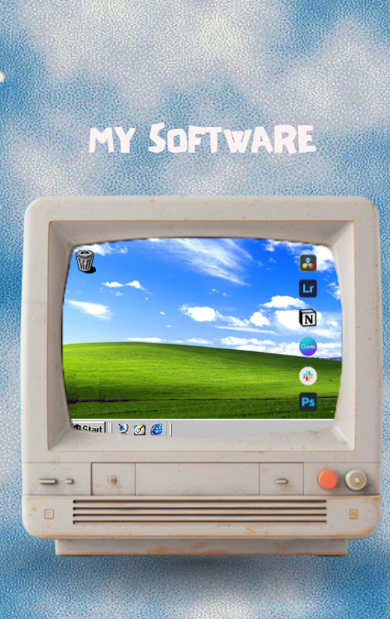
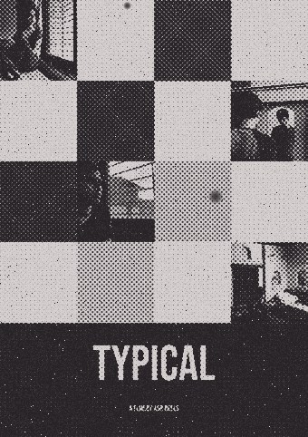
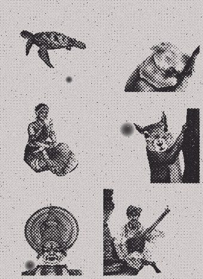
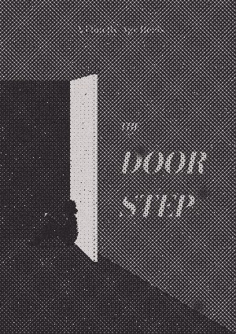
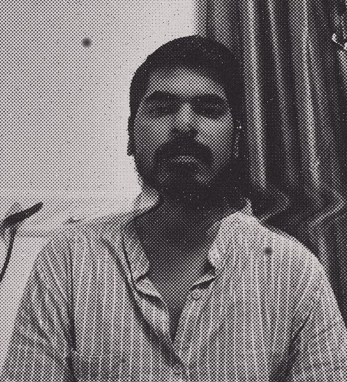
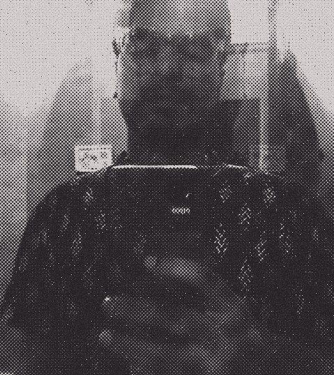
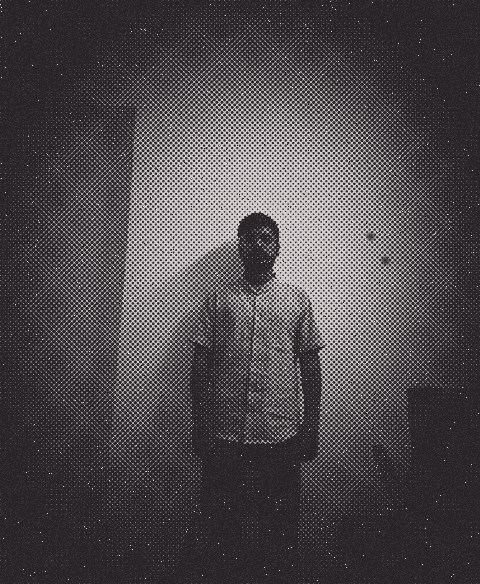

when I’m not designing
I’m still figuring out what makes things click — sometimes in a design, sometimes in a place, sometimes in the most unexpected details. I collect little observations, chase interesting ideas, and probably overthink things that other people walk straight past.

“typical” — a short
film poster, AGR Reels
film poster, AGR Reels

pen & ink —
a turtle, a sleepy koala
& a few faces
a turtle, a sleepy koala
& a few faces

“the door step”

a little bit about me
I started by moving furniture around on a screen. Now I move buttons around on one.

that’s me!
Four years of interior design, a year of practice, and one career plot twist later, I found myself designing digital products instead of physical spaces. My first stop was Varuna Marine Services, where I was the entire design department of one. Then came Centralogic, a Master’s in UX, and a growing collection of problems I genuinely enjoy solving.


Apparently, changing the medium doesn’t change the obsession.